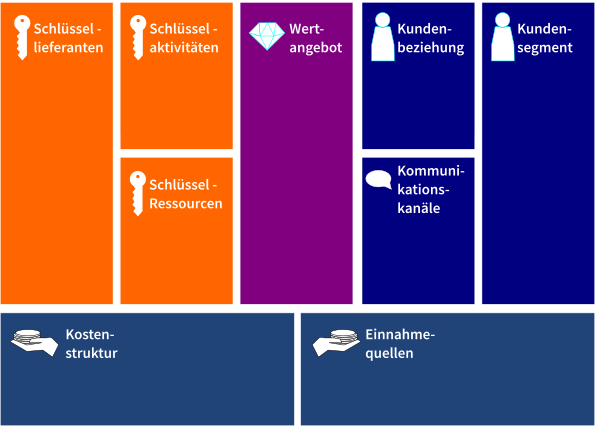

Agile und Lean
KOM-ITIL
Sebastian Meisel
Einführung in Agile und Lean Projektmanagement
Agile und Lean sind zwei moderne Ansätze im Projektmanagement, die sich darauf konzentrieren, effizientere und effektivere Prozesse zu schaffen. Sie sind besonders in der IT-Branche beliebt, wo Projekte oft komplex und unvorhersehbar sind.
Typische Faktoren für das Scheitern von IT-Projekten
- Unklare Anforderungen
- Mangelnde Kommunikation
- Rigidität
Agile Projektmanagement
Grundlagen
Agile basiert auf dem Agilen Manifest (2001), das vier Hauptprinzipien hat:
- Individuen und Interaktionen über Prozesse und Tools
- Funktionierende Produkte über umfassende Dokumentation
- Zusammenarbeit mit dem Kunden über Vertragsverhandlung
- Reagieren auf Veränderung über das Befolgen eines Plans
Lösung von IT-Problemen durch Agile
- Anpassungsfähigkeit: Agile Methoden wie Scrum ermöglichen es Teams, flexibel auf Änderungen zu reagieren.
- Kommunikation: Durch tägliche Stand-ups und Retrospektiven wird die Kommunikation innerhalb des Teams und mit Stakeholdern gefördert.
Lean Projektmanagement
Grundlagen
Lean fokussiert sich auf die Eliminierung von Verschwendung (Waste), um den Wert für den Kunden zu maximieren. Die sieben Arten von Verschwendung sind:
- Überproduktion
- Wartezeit
- Transport
- Überbearbeitung
- Lagerung
- Bewegung
- Herstellung von Fehlern
Lösung von IT-Problemen durch Lean
- Effizienz: Durch die Identifizierung und Eliminierung von Verschwendung werden Prozesse effizienter.
- Kundenfokus: Lean legt großen Wert darauf, genau das zu produzieren, was der Kunde benötigt und wann er es benötigt.
Gemeinsame Probleme bei der Implementierung
- Dogmatismus: Die strikte Befolgung der Methoden ohne Anpassung an den Kontext kann kontraproduktiv sein.
- Fehlende Anpassung: Beide Methoden müssen an die spezifischen Bedürfnisse des Projekts angepasst werden.
- Agile ist mehr auf die Menschen und die Zusammenarbeit fokussiert, während Lean mehr auf Prozesse und Effizienz ausgerichtet ist.
- Beide Ansätze haben ihre eigenen Stärken und Schwächen und können sogar kombiniert werden, um die Vorteile beider zu nutzen.
Agile Methoden
Extrem Programming (XP)

Test-Driven Development (TDD)
- Grundlagen
TDD ist eine agile Softwareentwicklungsmethode, die das Schreiben von Tests vor dem Code fördert.
- Prinzipien
- Rot-Grün-Refaktor-Zyklus
- Weiterführende Ressourcen
Test Driven Development: So funktioniert die Methode YouTube: Python Simplified: Python TDD Workflow - Unit Testing Code Example for Beginners (automatisch übersetzte Untertitle verfügbar)
Lean Methoden
Kanban
| 0/6 | 0/4 | 0/4 | ||||
| Backlog | Todo | Development-WIP | Development-Done | Testing-WIP | Testing-Done | Release |
Business Model Canvas

Lean Development
- Grundlagen
Lean Development bezieht sich auf die Anwendung von Lean-Prinzipien in der Softwareentwicklung.
- Prinzipien
- Eliminierung von Verschwendung
- Just-in-Time-Produktion
- Weiterführende Ressource
Lean-Softwareentwicklung – Vorläufer oder Nachfolger der Agile-Bewegung?
Kaizen